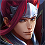
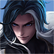
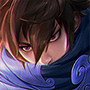

이 문서는 원류지자 암살자 형태를 정글로 운용할 때의 동선·역갱·목표물 대응을 정리한다. 영웅명은 중국판 선택 화면 표기를 유지했다. 아래 목록은 Tencent 영웅 데이터에서 정글 추천 또는 겸임 분류가 있는 전 영웅을 포함한다. 다른 라인 문서와 이름이 겹쳐도, 여기서는 정글에서 만날 때의 대응을 설명한다.
원류지자 암살자 형태의 기본 계획
- 시작 전에 양쪽 라인의 초반 제어기와 적 정글의 첫 캠프를 고려해 첫 동선을 정한다. 초반 1대1이 강한 상대와 시야 없이 강가에서 맞닥뜨리지 않는다.
- 갱킹 때 진입기 전부를 한 번에 쓰지 않는다. 첫 진입 뒤 빠져나올 이동기나 제어를 하나 남기고, 적의 무적·해제·역진입이 빠진 다음 마무리한다.
- 적 정글이 보이지 않으면 반대편 캠프·강가 시야로 위치를 추정한다. 작은 교전에서 이득을 본 직후 용·정령·적 캠프 중 하나로 확실히 전환한다.
- 침묵·제압·기절이 많은 조합에는 혼자 후열을 파고들지 않는다. 아군 제어가 시작된 뒤 들어가고, 목표물을 처치한 뒤 남은 이동기로 이탈한다.
매치업
정글 주 포지션 후보
25개
赵云궁극기 착지 후 폭발 피해와 낮은 체력 대상 추격이 강하다. 선진입을 피하고, 궁극기 사용 뒤 역갱·목표물 싸움을 연다.
阿轲시야 밖 접근과 후방 치명타가 핵심이다. 후열을 혼자 두지 말고, 은신 흔적·접근 방향을 확인한 뒤 팀과 함께 끊는다.

孙悟空기술 뒤 강화 평타로 빠르게 폭딜한다. 첫 강화 평타를 받아낼 수 있는 아군 뒤에서 기다리고, 돌진·궁극기 사용 뒤 반격한다.

典韦궁극기 뒤 지속 추격과 고정 피해가 강해 근접 맞딜이 위험하다. 둔화·제어를 먼저 걸고 거리를 벌려 궁극기 시간을 소모시킨다.

宫本武藏지정 궁극기로 핵심 딜러를 붙잡고 회복을 줄인다. 후열과 함께 서서 한 명만 고립되지 않게 하고, 궁극기 후 짧은 시간에 집중 제어한다.
李白표식과 연속 이동 후 선택 불가 궁극기로 피해를 피한다. 잔상·복귀 위치를 기억하고, 궁극기가 빠진 다음 팀 제어를 겹친다.

露娜표식을 소모해 이동기를 연속 초기화한다. 아군에게 표식이 남지 않게 흩어 서고, 진입 콤보를 끊을 제어를 보존한다.

韩信벽을 넘는 다수의 이동기로 캠프와 라인을 빠르게 오간다. 한쪽 강가에 시야를 두고 반대쪽 자원을 챙기며, 이동기 사용 후만 추격한다.
兰陵王은신 경고 후 후열을 기습한다. 경고가 뜨면 단독 파밍을 멈추고 아군과 뭉치며, 은신 해제 후 제어를 집중한다.

娜可露露궁극기 진입과 표식 폭발로 한 명을 삭제한다. 물몸 딜러를 단독으로 두지 말고, 하강 지점에 즉시 제어를 넣는다.

刘备가까운 거리에서 탄환을 몰아넣고 궁극기로 제어를 막는다. 좁은 지형에서 맞딜하지 말고, 궁극기를 빼낸 뒤 사거리 밖으로 물러난다.

雅典娜돌진 반복과 표식 폭발로 목표를 쫓는다. 진입 경로를 아군과 겹치게 만들고, 표식이 쌓인 대상은 바로 보호한다.

百里玄策사슬에 맞으면 끌려가고 처치 뒤 연계가 이어진다. 사슬의 직선 경로를 피하고, 연결 실패 후 짧게 반격한다.

裴擒虎초반 두 형태를 이용해 침입·강가 싸움을 강요한다. 아군 라인 지원이 없으면 버프를 혼자 지키지 말고, 반대편 자원 교환을 택한다.

司马懿침묵 뒤 빠르게 진입하고 궁극기로 거리를 좁힌다. 첫 침묵을 맞을 위치에 홀로 있지 말고, 진입 후 이탈 기술이 빠졌을 때 공격한다.

云中君이동 경로와 표식 누적을 이용해 고립된 대상을 쫓는다. 벽을 넘어오는 진입을 대비해 강가 시야를 두고, 표식이 쌓이면 아군 쪽으로 빠진다.

镜분신과 거울 영역 안에서 짧은 간격으로 왕복 공격한다. 거울 가장자리와 본체 위치를 보며 제어를 분신에 낭비하지 않는다.
阿古朵정글 몬스터를 빠르게 흡수하고 소환수와 함께 포탑을 압박한다. 소환수에 스킬을 낭비하지 말고, 본체가 드러난 순간 제어와 목표물 압박을 겹친다.

澜물결을 타고 접근해 체력이 낮은 적을 처형한다. 체력이 낮은 아군은 후퇴시키고, 잠수 상태에서 보이지 않을 때 강가를 단독으로 통과하지 않는다.
云缨창술의 층을 쌓아 제어·회복·감소 피해를 바꾼다. 기술을 모두 맞받지 말고, 강화 창술을 쓴 직후 역진입한다.

暃벽 위 이동으로 예상 밖의 각에서 진입한다. 벽에 붙은 사각을 확인하고, 벽에서 내려온 뒤의 공격에 제어를 집중한다.

大司命표식을 남기고 긴 추격으로 후열을 압박한다. 목표물 전투 전 체력을 아끼고, 궁극기 강제 교전을 아군과 함께 받아낸다.

影강화 공격과 궁극기 진입으로 전투를 빠르게 끝내려 한다. 첫 돌진을 피한 뒤 제어를 남기고, 강화가 끝나기 전엔 단독 추격하지 않는다.
元流之子(刺客)같은 암살자 형태끼리는 먼저 모든 이동기를 쓴 쪽이 역습에 취약하다. 남은 층과 이탈 경로를 계산하고, 상대의 마지막 진입 뒤 맞받는다.
王维빈번한 피해 회피와 밀어내기·둔화로 맞교환을 끊는다. 표시된 회피 자원이 남아 있을 때 폭딜을 낭비하지 말고, 회피 발동 직후 다시 진입한다.
다른 주 포지션에서 정글로 올 수 있는 후보
27개
钟无艳석화와 근접 제어를 강가에서 맞지 않게 간격을 둔다. 석화가 빠진 뒤 작은 교전을 열고, 좁은 입구에서 혼자 싸우지 않는다.

心魔六耳공중 회피와 궁극기 선택 불가를 가진다. 큰 제어를 공중 동작에 쓰지 말고, 궁극기 종료 후 집중한다.

白起궁극기 도발로 목표물 앞에서 역전을 만든다. 드래곤 입구에서 먼저 맞지 말고, 도발을 쓴 뒤 목표물을 다시 친다.

芈月지속 회복과 무적 궁극기로 소규모 전투를 길게 만든다. 연결 공격을 피하며 짧게 싸우고, 궁극기 종료 후 추격한다.

夏侯惇다중 제어와 보호막으로 진입을 막는다. 먼저 제어를 빼고, 보호막이 끝난 구간에 후속 딜을 넣는다.

曹操궁극기 회복을 켠 상태의 추격전이 강하다. 궁극기를 빼고 재교전하거나, 다른 목표물을 먼저 챙긴다.

程咬金회복 궁극기로 체력을 채우며 추격한다. 치유 감소가 없다면 긴 추격을 끊고, 궁극기 시간 동안 다른 캠프를 먹는다.

橘右京긴 사거리 기절과 순간 폭딜을 강가 수풀에서 노린다. 수풀을 먼저 확인하고, 기절이 빗나간 뒤 반격한다.

亚瑟침묵으로 연계 기술 사용을 막는다. 교전 시작에 침묵을 맞지 않도록 거리를 유지하고, 침묵 후 안전하게 이탈한다.
李元芳표식 폭발과 수풀 시야 확인으로 목표물 싸움이 빠르다. 표식이 붙은 아군과 떨어지고, 궁극기 장판 밖으로 나와 싸운다.

杨戬체력이 낮은 목표를 향한 돌진과 회복이 반복된다. 체력이 빠진 아군을 후퇴시키고, 표식 없는 상태에서 반격한다.

哪吒궁극기 전역 진입으로 후열을 끊는다. 용을 치기 전에 라인 상태를 확인하고, 지정된 아군에게 방어·제어를 맞춘다.
诸葛亮표식을 쌓은 뒤 처형 궁극기로 연속 킬을 노린다. 궁극기를 대신 막을 아군이 없으면 체력이 낮은 팀원이 먼저 빠진다.

铠궁극기 중 폭발적인 일대일 전투가 강하다. 좁은 길목에서 만나면 싸움을 피하고, 지속 시간이 끝난 뒤 재진입한다.

梦奇보호막·평타 기반으로 초반 침입을 버틴다. 보호막이 켜진 본체에 전부 던지지 말고, 적의 백업이 오기 전에 후퇴 경로를 확보한다.

杨玉环광역 피해와 회복, 궁극기 무적으로 전투 시간을 늘린다. 궁극기를 쓰기 전 후열을 한꺼번에 몰지 말고, 종료 후 목표물을 잡는다.

孙策배 궁극기로 멀리서 합류해 목표물 전투를 연다. 정글 입구 직선 경로를 시야에 두고, 충돌 후 분리된 적을 노린다.

嫦娥마나 보호막과 궁극기 연속 피해로 근접 교전을 강요한다. 폭딜을 궁극기 안에 남발하지 말고, 보호막이 약해진 뒤 제압한다.

猪八戒좁은 정글에서 벽·제어와 회복으로 오래 버틴다. 벽에 갇히지 않게 넓은 공간으로 유인하고, 팀의 집중 공격으로 짧게 끝낸다.

盘古무장 해제와 제어로 평타 의존 캐릭터를 막는다. 무장 해제 사거리 밖에서 시작하고, 해제 후 목표물을 다시 친다.

曜궁극기 되돌아가기와 표식으로 진입·이탈을 반복한다. 잔상 위치에 제어를 남겨 두고, 복귀 이후에 팀의 공격을 집중한다.

马超창을 주우며 긴 거리에서 연속 진입한다. 창이 놓인 쪽으로 쫓아가지 말고, 창을 놓치는 구간에 역갱한다.

赵怀真적의 공격·투사체를 받아내고 전투를 되돌린다. 주요 투사체를 막는 자세 중에는 궁극기와 폭딜을 아끼고, 자세가 끝난 뒤 교전한다.

司空震궁극기 변신 후 원거리·근거리 타격과 제어가 강해진다. 변신을 확인하면 후퇴해 시간을 빼고, 끝난 뒤 다시 목표물을 친다.
苍늑대 소환수와 원거리 공격으로 진입로를 방어한다. 늑대가 붙은 상태에서 추격하지 말고, 시야 밖에서 본체로 우회한다.

蚩奼공격 횟수에 따라 형태와 제어가 강화된다. 강화 평타 누적을 허용하지 말고, 제어·돌진이 빠진 다음 교전한다.

元流之子(坦克)탱커 형태는 제어·회복으로 입구를 버틴다. 혼자 길게 맞딜하지 말고, 후열과 겹쳐 들어갈 때 먼저 제어를 건다.
참고 기준
- 매치업 초상화는 Tencent 공식 CDN의 영웅 아이콘을 문서 옆 `images/heroes/` 폴더에 저장해 사용한다.
- Tencent 공식 영웅 목록과 포지션 필드: herolist.json (2026-11-08 조회). `roles`와 `extra_cold_lane`에 정글로 표시된 후보를 포함했다.
- 원류지자 암살자 형태의 정글 포지션 안내: 왕자영요 S43 시즌 안내.
- 매치업 문장은 기술의 핵심 위협을 기준으로 한 대응 요약이다. 패치별 수치와 아이템 효율은 게임 내 최신 설명을 우선한다.